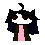

Home Downloads
About Me!
Buttons!
Hi!!! My name is Silver!!!!!!!!

I'm a lesbian transgender(she/her) catgirl weeb with an interest in old computer software and hardware.
One of a kind, I know. Some of my specific interests include Valve and id Software games (Portal 2 and the DOOM franchise especially),
Touhou*,
Vocaloid, and Halo 3 Mountain Dew Game Fuel, a flavor I hope to taste one day.